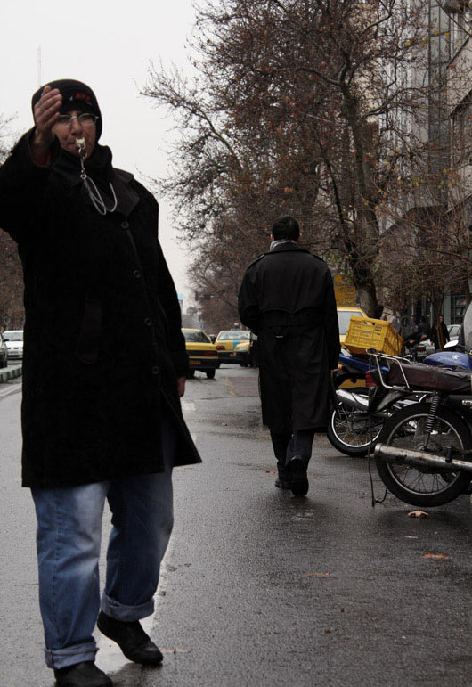

|
|
پای درد دل زنی که برای مسافرکشان مسافر جور میکند!/عصرایران
شنبه23 بهمن 1389
اگر تا به حال به خیابان وصال رفته باشید حتما با تعجب نظاره گر کار زنی بودید که با تیپ و لحنی مردانه مسافران خط وصال - حجاب را سوار خطی ها می کند و با صدای بلند با تاکسی هایی که خارج از نوبت مسافر سوار می کنند بحث می کند؛ شاید اگر روسری اش نبود خیلی ها به زن بودنش شک می کردند اما زن است آن هم زنی که چهار سال است در این شغل مردانه دوام آورده.
به گزارش دادنا، یکی از صبح های زمستان به سراغش رفتم تا قصه زندگی اش را بشنوم، انتظار نداشتم این قدر راحت راضی به صحبت شود اما آنقدر دوستانه شروع به صحبت کرد و با جنب و جوش برای عکاس ژست گرفت که خودم هم تعجب کردم چه برسد به مردمی که با تعجب نگاهم می کردند.
خانم کاظمی با بیان اینکه چند سال است که کار می کند در رابطه با شغل قبلی اش می گوید: «اول پیک موتوری یک شرکت بودم، پول، نامه و حتی چک می بردم این ور و اون ور، شرکت که ورشکست شد رئیسش به من گفت که دیگه کار ندارم و باید بری بیرون، شکایت هم کردم اما نتونستم کاری کنم. بعد از 10 سال که اونجا کار کردم هیچی دستم رو نگرفت. اون شرکت ماهی 70 هزار تومان حقوق می داد، همه جا هم می رفتم، کرج، قم، شاه عبدالعظیم، بالا شهر؛ راههای نزدیک رو با دوچرخه می رفتم، راههای دور رو هم با موتور. لباس زنانه تنم بود کلاه هم می گذاشتم پلیس خیلی بهم گیر می داد موتور مال شرکت بود وقتی بیرونم کردن اگه می خواستم نامردی کنم همون موتور رو هم بر می داشتم می رفتم اما این کارها توی مرام من نیست. اون کار بهتر بود بیمه هم بودم تازه توی تمام اون مدت هم نه با موتور و نه با دوچرخه تصادف نکردم.»

زنی که عاشق شغل مردانه اش نیست
دستش رو به دستام میزنه و میگه ببین دستام چه قدر یخه و واقعا هم چه قدر سرد بود، حس کردم حتی استخوانهایش هم یخ زده اند. داستان این شغل از وقتی برایش شروع شد که کارش را به عنوان پیک موتوری از دست داد می گوید «بیکار که شدم بچه های این خط، من رو می شناختند گفتند میای اینجا کار کنی من هم چاره ای نداشتم قبول کردم و اومدم اینجا، الان هم 4 ساله که اینجا کار می کنم. هر روز ساعت 4 صبح از اکبر آباد توی جاده ساوه میام اینجا و تا ساعت 3 و 10 دقیقه کار می کنم وقتی هم به خانه می رسم دیگر شب شده چون جاده ساوه خیلی دوره.»
در رابطه با درآمدش از این شغل می گوید: «معمولی روزی 6 هزار تومان درمیارم اما روزایی که مسافرا کمک می کنن روزی ممکنه 10 هزار تومان هم درآمد داشته باشم اما به هر حال روزی هزار تومن برای رفتن و هزار تومن هم برای برگشتن کرایه می دهم. البته پنج شنبه و جمعه ها و تعطیلات عید که سر کار نمی آید هم از حقوق و و درآمد خبری نیست.»
وقتی سنش را می پرسم می گوید «چهل و خورده ای»؛ پیش خودم حساب می کنم حتی اگر این خورده ای 9 سال هم باشد باز هم خیلی بیشتر از سنش شکسته شده است، سه پسر و یک دختر دارد، شوهرش چند سال است که فلج شده و گوشه خانه افتاده و خود سرپرست خانواده است؛ می گوید دوست داشته لااقل بچه هایش درس بخوانند تا کاره ای شوند اما حتی آنها هم آرزویش را برآورده نکرده اند.
آقا سوار نکن
گمان می کردم حتما کارش را دوست دارد وگرنه نمی شود این قدر برای این کار انرژی گذاشت اما در جوابم صادقانه می گوید: «راستش رو بخوای این کار رو دوست ندارم اما خوب چاره ندارم. شما فکر کنید من تمام مدت توی سرما و گرما سرپا ایستادم، پام رو عمل کردم الان توش پر آبه، نمی دونید چه قدر اذیت میشم، بعضی از مردها هم خیلی بی ادبن وقتی ازشون میخوام که مسافر سوار نکنن حتی یقه منو می گیرند، از این کار خاطره خیلی دارم بیشترش هم مربوط به دعواست که میگم آقا سوار نکن و جواب میشنوم به تو چه. تا حال خیلی ها هم از طرف نیروی انتظامی یا شهرداری اومدن و گفتن نباید اینجا کار کنم و حتی با راننده ها هم دعوا کردند، اونها هم گفتند که اگر داشت که نمی یومد اینجا کار کنه.»
وقتی می پرسم چه آرزویی داری بلند میخندد: «آرزو؟ به نظرت دیگه از این بدبخت تر میشه، اما خوب دوست داشتم توی یک شرکت پیک موتوری وایمیستادم اگر نشد آبدارچی. چاره ای ندارم دخترم.»
این حکایت پر درد زنی است که از یکسو سرپرست خانواده است و از سویی دیگر مادری که هزاران آرزو برای فرزندان خود در سر می پروراند و اگر چهبسا کوچکترین کمکی حداقل در راه ایجاد اشتغال به او میشد شاید داستان زندگی اش کمی شیرین تر از شرایطی بود که امروز به ناچار با آن دست و پنجه نرم می کند.